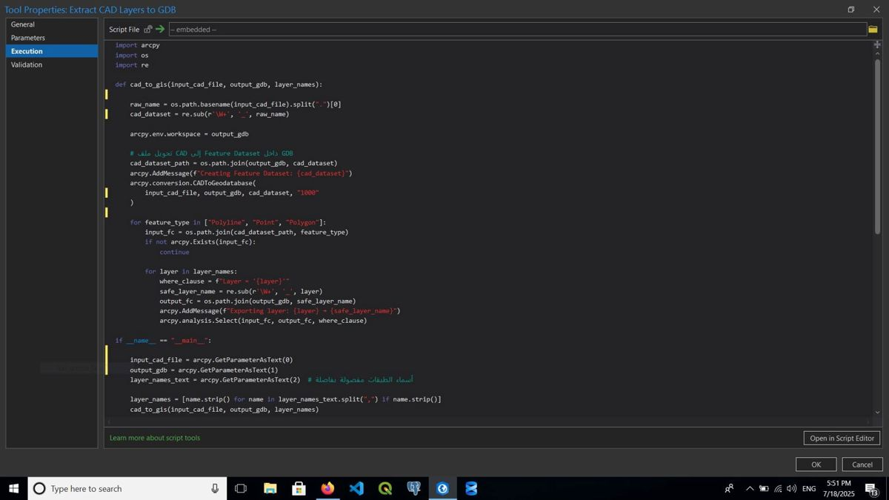

CAD to GIS Layer Export Tool
Infrastructure drawings arrive as DWG files with dozens of layers: pipes, valves, fittings. Selecting and exporting each layer by hand is slow. This script tool takes a DWG and a list of layer names and writes each layer out as its own feature class in a geodatabase.
- Inputs: a CAD file, an output geodatabase and comma-separated layer names.
- Converts the CAD file to a feature dataset, then exports each requested layer from the line, point and polygon classes.
- Cleans layer names automatically, so HD PIPE 63 becomes HD_PIPE_63.
- Tested on an as-built water network DWG. Applies to water, sewer, electricity and gas networks.
